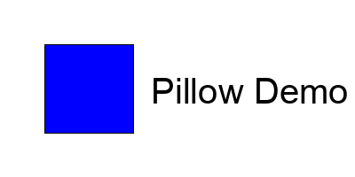

14 years of Pillow, 29 years of PIL ü•≥
Presented to Austin Python Meetup 07/10/24
About Me

Me circa 1998 ‚Üëü§î
- Alex
- Jeffrey A. Clark (↖same thing)
- Bachelor of Science Computer Science 1998 Loyola University Maryland
About Me

Me circa 2008 ↖(left)ü§î
- Python Pillow Creator 2010
- PIL fork author (↑same thing)
- Tidelift Lifter 2019 ($$$ for Pillow)
About Me

Me circa 2020
Plone Conference 2020 — State of Pillow
- Lifter 2019 (actually late 2018)
- Lifter Advocate 2023, 2024
- #opentowork (You should probably hire me.)
❤️
Let's pay the maintainers ✨
Are you an open source maintainer? Take this short survey from Tidelift . For every completed survey, they're giving away a free Pay the Maintainers T-shirt. https://tidelift.az1.qualtrics.com/jfe/form/SV_8cfOxXluZDsXrrE
Let's talk about Pillow
(Alex's Version)
 https://github.com/python-pillow/pillow-demo
https://github.com/python-pillow/pillow-demo
Let's talk about Pillow
(Alex's Version)
Part II
This is totally NOT the talk I gave three months ago
That talk is here
Other Code Examples


Example #1 Open image and print info
>>> from PIL import Image
>>> im = Image.open("hopper.ppm")
>>> print(im.format, im.size, im.mode)
PPM (128, 128) RGB
>>> im.show()

Example #2 Rotate image 90 degrees clockwise (270 degrees counter clockwise)
>>> from PIL import Image
>>> im = Image.open("hopper.ppm")
>>> im = im.rotate(270)
>>> im.save("rotated_hopper.jpg")
>>> im.show()

Example #3 Convert to jpeg
>>> from PIL import Image
>>> im = Image.open("hopper.ppm")
>>> im.save("hopper.jpg")
$ file hopper.jpg
hopper.jpg: JPEG image data, JFIF standard 1.01,
aspect ratio, density 1x1, segment length 16, baseline,
precision 8, 128x128, components 3
Example #4 Create thumbnails
>>> from PIL import Image
>>> im = Image.open("hopper.ppm")
>>> im.thumbnail([64, 64])
>>> im.save("thumbnail_hopper.jpg")
>>> im.show()

Example #5 Crop image
>>> from PIL import Image
>>> im = Image.open("hopper.ppm")
>>> im = im.crop([0, 0, 64, 64])
>>> im.save("cropped_hopper.jpg")
>>> im.show()

Example #6 Pasting image
>>> from PIL import Image
>>> im = Image.open("hopper.ppm")
>>> region = region.transpose(Image.Transpose.ROTATE_180)
>>> im.paste(region, (0, 0, 64, 64))
>>> im.save("pasted_hopper.jpg")
>>> im.show()

Example #7 Roll image
>>> from PIL import Image
>>> from roll import roll
>>> im = Image.open("hopper.ppm")
>>> im = roll(im, 64)
>>> im.save("rolled_hopper.jpg")
>>> im.show()

Example #7 roll.py
def roll(im, delta):
"""Roll an image sideways."""
xsize, ysize = im.size
delta = delta % xsize
if delta == 0:
return im
part1 = im.crop((0, 0, delta, ysize))
part2 = im.crop((delta, 0, xsize, ysize))
im.paste(part1, (xsize - delta, 0, xsize, ysize))
im.paste(part2, (0, 0, xsize - delta, ysize))
return im
Example #8 Merge images
>>> from PIL import Image
>>> hopper = Image.open("hopper.jpg")
>>> alex = Image.open("img/alex-pillow.jpg")
>>> im = merge(hopper, alex)
>>> im.save("merged_hopper.png")
>>> im.show()

Example #8 Merge images (and resize)
>>> from PIL import Image
>>> hopper = Image.open("hopper.jpg")
>>> alex = Image.open("img/alex-pillow.jpg")
>>> im = merge(hopper, alex)
>>> im.save("merged_resized_hopper.png")
>>> im = Image.open("merged_resized_hopper.png")
>>> im = im.resize([128, 128])
>>> im.save("merged_resized_hopper.png")
>>> im.show()

Example #9 Split and merge bands
>>> from PIL import Image
>>> r, g, b = im.split()
>>> im = Image.merge("RGB", (b, g, r))
>>> im.save("rebanded_hopper.jpg")
>>> im.show()

Example #10 Create JPEG thumbnail with resize
>>> from PIL import Image
>>> im = im.resize([64, 64])
>>> im.save("resized_hopper.jpg")
>>> im.show()

Example #11 Transpose image left to right
>>> from PIL import Image
>>> im = im.transpose(Image.Transpose.FLIP_LEFT_RIGHT)
>>> im.save("flip_left_right_hopper.jpg")
>>> im.show()

Example #12 Transpose image top to bottom
>>> from PIL import Image
>>> im = im.transpose(Image.Transpose.FLIP_TOP_BOTTOM)
>>> im.save("flip_top_bottom_hopper.jpg")
>>> im.show()

Example #13 Rotate image 90 degrees with transpose
>>> from PIL import Image
>>> im = im.transpose(Image.Transpose.ROTATE_90)
>>> im.save("rotated_hopper_90.jpg")
>>> im.show()

Example #14 Rotate image 180 degrees with transpose
>>> from PIL import Image
>>> im = im.transpose(Image.Transpose.ROTATE_180)
>>> im.save("rotated_hopper_180.jpg")
>>> im.show()

Example #15 Rotate image 270 degrees with transpose
>>> from PIL import Image
>>> im = im.transpose(Image.Transpose.ROTATE_270)
>>> im.save("rotated_hopper_270.jpg")
>>> im.show()

Example #16 Relative resize image with contain
>>> from PIL import ImageOps
>>> ImageOps.contain(im, (100, 150)).save(
>>> "contained_hopper.png")
$ file contained_hopper.png
contained_hopper.png: PNG image data,
100 x 100, 8-bit/color RGB, non-interlaced

Example #17 Relative resize image with cover
>>> from PIL import ImageOps
>>> ImageOps.cover(im, (100, 150)).save("covered_hopper.png")
$ file covered_hopper.png
covered_hopper.png: PNG image data,
150 x 150, 8-bit/color RGB, non-interlaced

Example #18 Relative resize image with fit
>>> from PIL import ImageOps
>>> ImageOps.fit(im, (100, 150)).save("fitted_hopper.png")
$ file fitted_hopper.png
fitted_hopper.png: PNG image data,
100 x 150, 8-bit/color RGB, non-interlaced

Example #19 Relative resize image with pad
>>> from PIL import ImageOps
>>> ImageOps.pad(im, (100, 150), color="#f00").save("padded_hopper.png")
$ file padded_hopper.png
padded_hopper.png: PNG image data,
100 x 150, 8-bit/color RGB, non-interlaced

Example #20 Convert mode
>>> from PIL import Image
>>> im = Image.open("hopper.ppm")
>>> im = im.convert("L")
>>> im.save("converted_hopper.jpg")
>>> im.show()

Example #21 Image enhancement
>>> from PIL import ImageFilter
>>> im = im.filter(ImageFilter.DETAIL)
>>> im.save("enhanced_hopper.jpg")
>>> im.show()

Example #22 Point operations
>>> from PIL import Image
>>> im = im.point(lambda i: i * 20)
>>> im.save("transformed_hopper.jpg")
>>> im.show()
Example #23 Process bands
>>> from PIL import Image
>>> source = im.split()
>>> r, g, b = 0, 1, 2
>>> mask = source[r].point(lambda i: i < 100 and 255)
>>> out = source[g].point(lambda i: i * 0.7)
>>> source[g].paste(out, None, mask)
>>> im = Image.merge(im.mode, source)
>>> im.save("masked_hopper.jpg")
>>> print("Saved masked hopper!")

Example #24 Enhance image
>>> from PIL import ImageEnhance
>>> im = ImageEnhance.Contrast(im)
>>> im = im.enhance(1.3)
>>> im.save("contrasted_hopper.jpg")
>>> im.show()

Example #25 Image sequences
>>> from PIL import ImageSequence
>>> im = Image.open("snorkle.gif")
>>> i = 1
>>> for frame in ImageSequence.Iterator(im):
>>> frame.save(f"snorkle_{i}.png")
>>> print(f"Saved snorkle frame {i}!")
>>> i += 1

Example #26 Postscript
>>> from PIL import PSDraw
>>> title = "hopper"
>>> fp = open("postscript_hopper.ps", "wb")
>>> ps = PSDraw.PSDraw(fp)
>>> ps.begin_document(title)
>>> ps.image((0, 0, 128, 128), im, 0)
>>> ps.setfont("HelveticaNarrow-Bold", 36)
>>> ps.text((0, 0), title)
>>> ps.end_document()
>>> print("Saved postscript hopper!")
convert postscript_hopper.ps postscript_hopper.pdf
Example #26 Postscript

More on reading images
Example #27: Reading from an open file
>>> with open("hopper.ppm", "rb") as fp:
>>> im = Image.open(fp)
>>> print(im)
<PIL.PpmImagePlugin.PpmImageFile image
mode=RGB size=128x128 at 0x1055FD940>
More on reading images
Example #28: Reading from binary data
>>> buffer = read_image_to_buffer("hopper.ppm")
>>> print(type(buffer))
<class '_io.BytesIO'>
>>> im = read_image_from_buffer(buffer)
>>> print(im)
<PIL.PpmImagePlugin.PpmImageFile image
mode=RGB size=128x128 at 0x1058294C0>
More on reading images
Example #29: Batch processing
>>> import glob
>>> paths = glob.glob("*.png")
>>> for path in paths:
>>> image = os.path.join(
>>> "batch",
"".join([path[:-4], ".jpg"])
)
>>> compress_image(path, image)
img/batch/covered_hopper.jpg
img/batch/screenshot.jpg
img/batch/pillow-logo-light-text.jpg
…
More on reading images
Example #29: Batch processing with pathlib
>>> from pathlib import Path
>>> paths = Path(".").glob("*.png")
>>> for path in paths:
>>> image = os.path.join(
>>> "batch",
"".join([path.stem, ".jpg"])
)
>>> compress_image(path, image)
img/batch/covered_hopper.jpg
img/batch/screenshot.jpg
img/batch/pillow-logo-light-text.jpg
…
More on reading images
Example #29: Batch processing output
$ ls -1 img/batch
contained_hopper.jpg
covered_hopper.jpg
dcpython-logo.jpg
fitted_hopper.jpg
logo.jpg
logo_fancy.jpg
merged_hopper.jpg
merged_resized_hopper.jpg
padded_hopper.jpg
pillow-logo-light-text.jpg
screenshot.jpg
screenshot0.jpg
screenshot1.jpg
screenshot2.jpg
screenshot3.jpg
screenshot4.jpg
screenshot5.jpg
screenshot6.jpg
screenshot7.jpg
snorkle_1.jpg
snorkle_2.jpg
snorkle_3.jpg
Controlling the decoder
Example #30: Reading in draft mode
>>> with Image.open("hopper.jpg") as im:
>>> print("original =", im.mode, im.size)
>>> im.draft("L", (100, 100))
>>> print("draft =", im.mode, im.size)
original = RGB (128, 128)
draft = L (128, 128)
Also check out
Concepts
Example #31: Bands
>>> im = Image.open(os.path.join("img", "hopper.ppm"))
>>> print(im.getbands())
('R', 'G', 'B')
Concepts
Example #32: Modes
>>> im = Image.open(os.path.join("img", "hopper.ppm"))
>>> print(im.mode)
RGB
Concepts
Example #33: Size
>>> im = Image.open(os.path.join("img", "hopper.ppm"))
>>> print(im.size)
(128, 128)
Concepts
Example #34: Coordinate System
>>> import cart
Example #34: Writing coordinate_system_example.png!

Concepts
Example #35: Palette
>>> import pal
Example #35: Writing output_image_with_random_palette.png
Concepts
Example #36: Info
>>> im = Image.open(os.path.join("img", "hopper.ppm"))
>>> print(im.info)
{}
Concepts
Example #36: Info
>>> im = Image.open(os.path.join("img", "alex-pillow.jpg"))
>>> print(im.info)
{'icc_profile': b'\x00\x00…'
…
b'\x00\x00…',
'jfif': 257,
'jfif_density': (1, 1),
'jfif_unit': 0,
'jfif_version': (1, 1),
'progression': 1,
'progressive': 1}
Concepts
Example #37: Transparency
import alpha
Example #37: Writing transparent_image.png!
Logos
Example #38: Logo
import logo
Example #37: Writing logo.png!

Logos
Example #39: Fancy Logo
import logo_fancy
Example #37: Writing logo_fancy.png!
Thank you! üëã
Alex
---
Jeffrey "Alex" Clark
Python Pillow Creator
ACLARK.NET, LLC President
DC Python Executive Director
Let's Pay the Maintainers ✨
--------------------------------
aclark@aclark.net